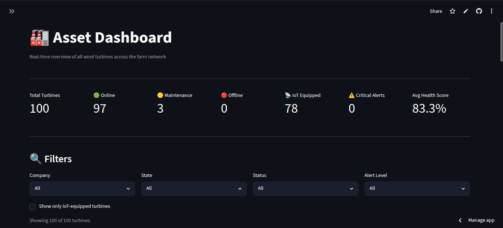
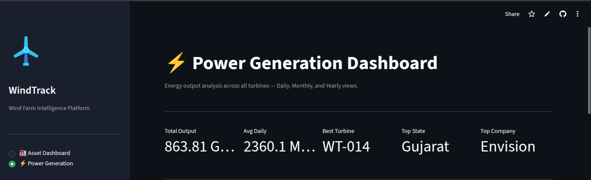
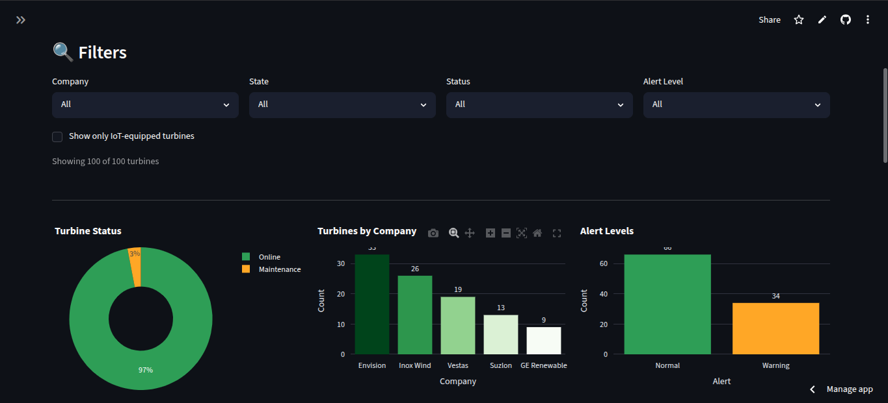

Industry 5.0
Industry 5.0 moves beyond automation-for-efficiency toward resilient, human-centric industry. Our focus: predictive maintenance that prevents downtime, anchored by WindTrack — a live, deployed IoT monitoring proof-of-concept.
Flagship proof
A live, deployed IoT wind turbine monitoring proof-of-concept: 100 simulated turbines across India-realistic wind zones, real-time asset dashboards and power generation analytics, deployed via GitHub to Streamlit Cloud.
The planned MRO prediction ML model will transform this from monitoring to true predictive maintenance — detecting early signs of component wear and scheduling intervention before failure. This is the most concrete proof point for our Industry 5.0 capability.



WindTrack dashboards — developed by our technical team
Built on the three pillars defined by the European Commission's original 2021 Industry 5.0 framing.
The strongest pillar — and where we lead. Predictive MRO catches equipment failure before it cascades, reducing downtime and extending asset life. WindTrack is our concrete, live example: monitoring 100 simulated turbines across India-realistic wind zones in near-real-time to detect anomalies before they become failures.
AI automation is about freeing technicians from repetitive manual monitoring so they can focus on judgment-based work — not replacing them. That distinction is the actual point of Industry 5.0, and we design every automation engagement around it.
Extending asset lifespan through predictive maintenance reduces waste and replacement cycles. Where there's a genuine sustainability claim, we surface it — we won't manufacture one that isn't real.
Related capabilities
Predictive maintenance doesn't exist in isolation. Two practice areas feed directly into the work WindTrack represents:
The same predictive, proactive philosophy applied to IT infrastructure instead of physical assets — plus the AI-driven automation that frees technicians for judgment-based work.
Explore →Predictive models like WindTrack's planned MRO system depend on solid data foundations — pipelines, warehousing, and BI that turn raw sensor data into decision-ready insights.
Explore →Talk to us about how predictive maintenance applies to your industry.